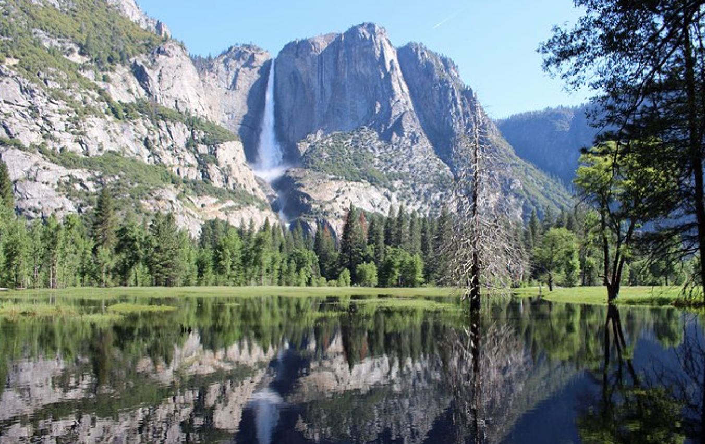
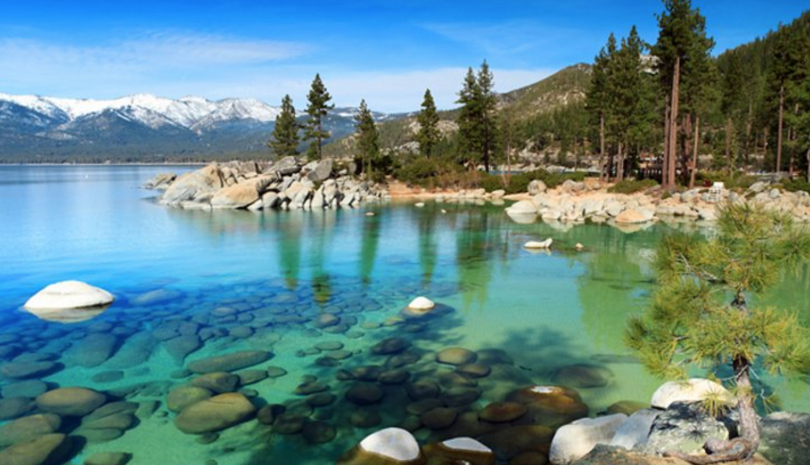
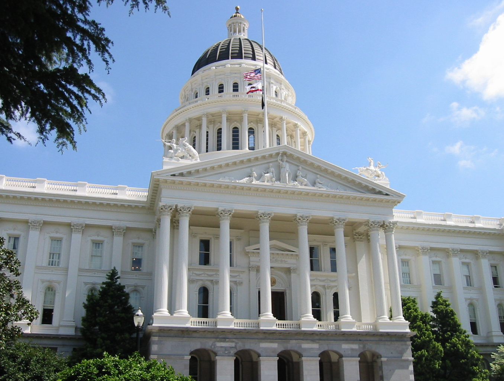

| Mountain Region | Desert Region | Valley Region | coast Region | ||
|---|---|---|---|---|---|
| land Form | Sierra Nevada and Costal Ranges | Hot and dry area covered in sand | Flat area between Sierra Nevada and Coastal ranges | Land along ocean | |
| Wearher | mild summer and Cold and snowey winters | hot and dry in summers and often cool at nights | hot and dry summers and cold and humid winters | mild summers and wet winnters | |
| Recreation | camping, skiing, hiking | camping, rock climbing, offroad riding, hiking | camping, tourisum, hiking | camping, whale watching, swimming, beaches, hiking | |
| Attractions | Lake Tahoe, Yosimmeti National Park | Red Rock Canyon State Park, Death Valley National Park, Joshua Tree National Park | Sacramento, Fresno, Bakers Field | Golden Gate Bridge, Big Sur |